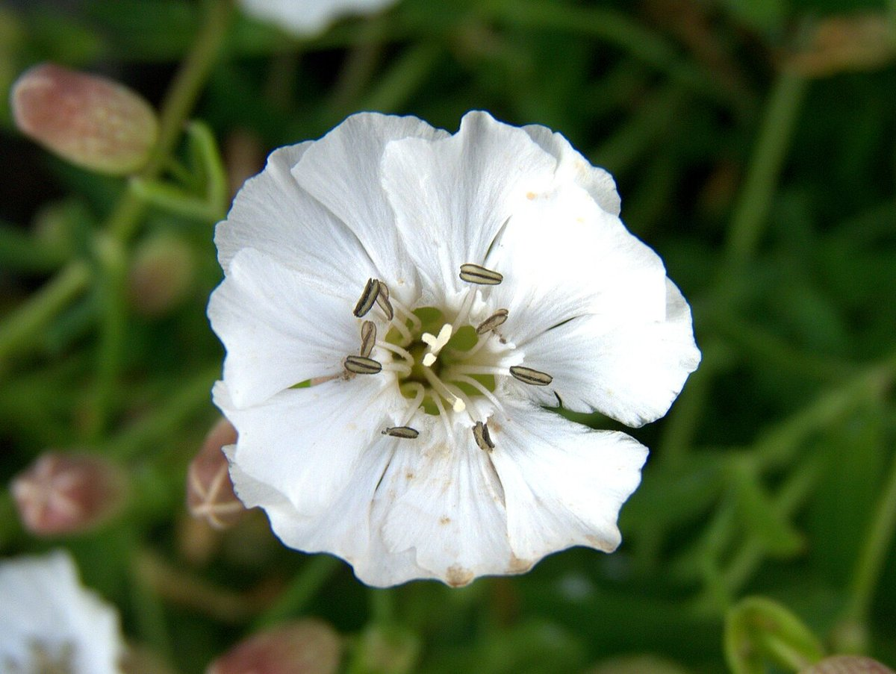
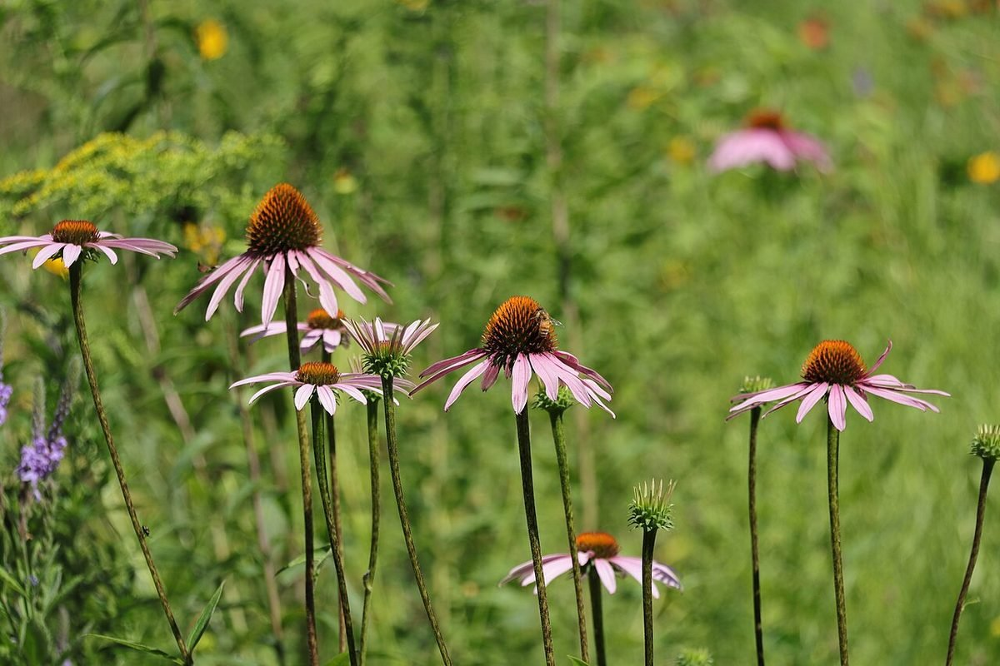
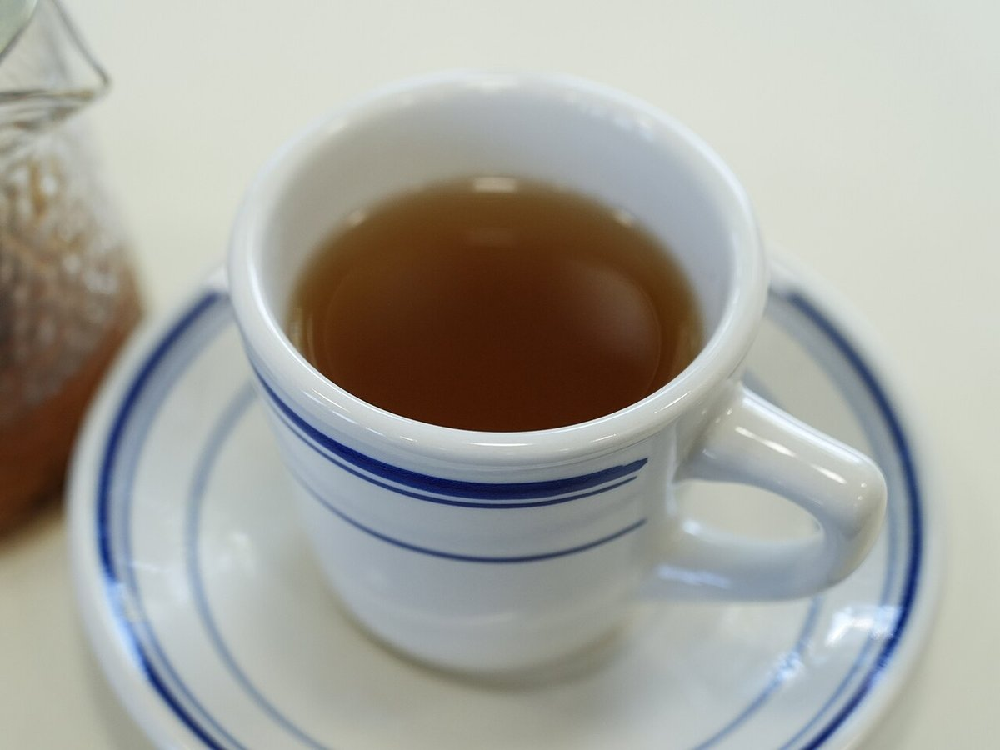

民家カフェ苺
新潟県燕市八王寺のカフェです。
営業時間・メニューなど、詳しい情報は準備中です。
いまの掲載情報
確認できている情報だけを載せています。
| 店名 | 民家カフェ苺 |
|---|---|
| 住所 | 新潟県燕市八王寺1761 |
| 電話 | 080-4175-5047 |
| ichigo_cafe15 | |
| 営業時間 | 準備中(お問い合わせください) |
| 定休日 | 準備中(お問い合わせください) |
| 料金 | 準備中(お問い合わせください) |

写真はイメージです。お店の様子はInstagramでご覧ください。

